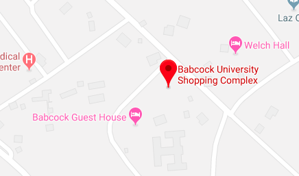

<!--
  Generated template for the MapPage page.

  See http://ionicframework.com/docs/components/#navigation for more info on
  Ionic pages and navigation.
-->
<ion-header>

    <ion-navbar>
     <button ion-button menuToggle >              
        <ion-icon name="menu" class="menubutton1" ></ion-icon>
      </button>
      <ion-title>Shop Position</ion-title>
  
  
      <ion-buttons end>
          <button ion-button (click)="GoChart()">
             <ion-badge *ngIf="cart_arr.length">{{cart_arr.length}}</ion-badge>
              <ion-icon name="basket" class="menubutton2">
              </ion-icon>
          </button>
        </ion-buttons>
    </ion-navbar>
  
  
  
  </ion-header>


<ion-content padding>


  <div >
    
  </div>
  <div >

    <button ion-button color="yello" (click)="mapSuper()" full >Babcock Super Store  <ion-icon name="pin" style="color:red;" ></ion-icon></button>
    <br>  
    <button ion-button color="yello" (click)="mapGuest()" full >Guest House <ion-icon name="pin" style="color:red;"></ion-icon></button>
  </div>


</ion-content>
